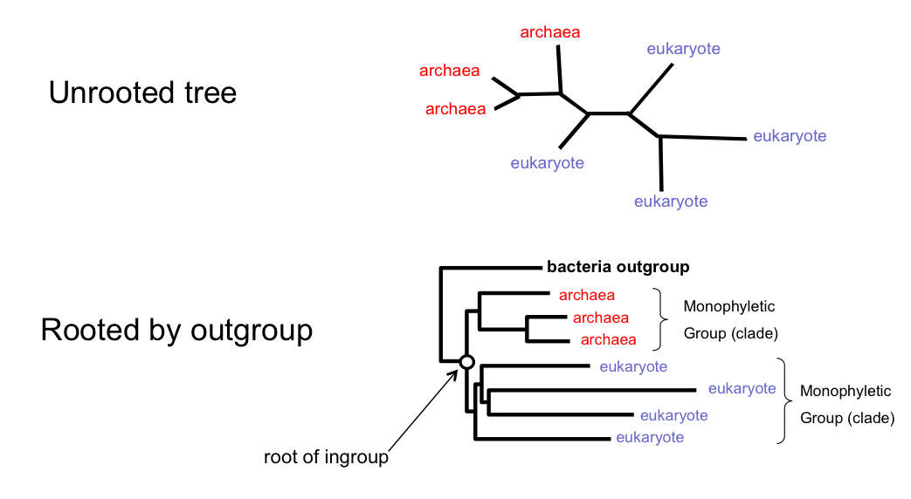
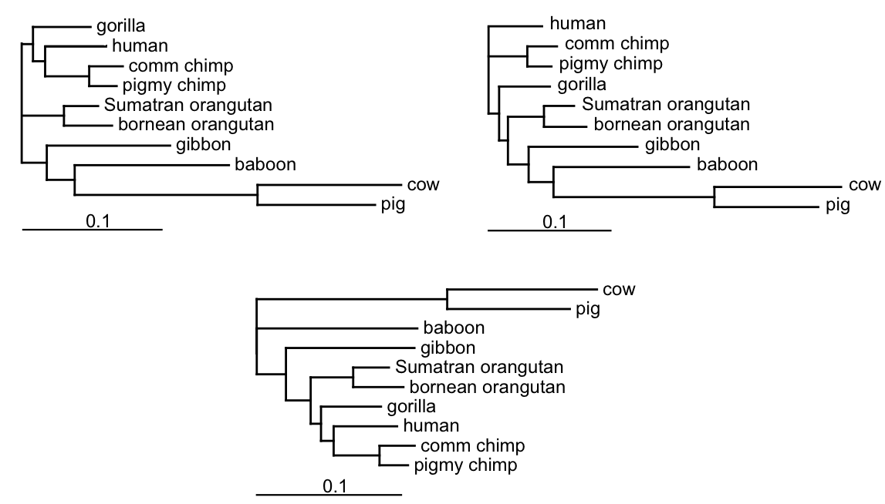

Molecules as Documents of Evolutionary History
Phylogenetics
- Similarity (due to homology) is viewed as evidence of common ancestry
- Homology: the result of inheritance from a common ancestor
- Phylogenetic trees are used to portray relationships based upon common ancestry
- Monophyletic groups (clades) - contain species which are more closely related to each other than to any outside of the group
- Phylogenetics has in recent years become a statistical science based on probabilistic models of evolution (more on this in later lectures).
A typical molecular phylogenetic analysis
- Collect homologous sequences
- Construct a multiple sequence alignment
- Phylogeny reconstruction
- Test the reliability of the estimated phylogeny
- Interpretation and application of phylogenies
Applications of phylogenetics
- Inferring relationships among species and genes
- Estimating divergence times
- Identifying functional elements in comparisons of genomic sequences
- Detecting molecular adaptation
- Forensics
- Studying the emergence and spread of viral pandemics
- many more...
Types of phylogenies and representations
Bifurcating (binary) and multifurcating trees
- In a rooted tree a polytomy is a node with more than 2 children.
- In an unrooted tree a polytomy is a node of degree 4 or greater.
Rooted and unrooted trees
Most phylogeny-reconstruction methods are unable to identify the root of the tree, so unrooted trees are inferred.
This includes the maximum parsimony method, as well as those distance, likelihood and Bayesian methods that do not assume a molecular clock.
Rooting trees using an outgroup

The same unrooted tree

How many trees are there?
Counting unrooted trees with stepwise addition algorithm
The topological distance between two trees
Phylogenetic reconstruction
There are essentially two types of data for phylogenetic tree estimation:
- Distance data, usually stored in a distance matrix, e.g. DNA×DNA hybridisation data, morphometric differences, immunological data, pairwise genetic distances
- Character data, usually stored in a character array, e.g. multiple sequence alignment of DNA sequences, morphological characters.
Phylogenetic reconstruction
There are a huge number of possible trees even for small data sets.
We have three options:
- Construct a tree according to some clustering algorithm
- Assign a goodness of fit criterion (an objective function) and find the tree(s) which optimise(s) this criterion
- Admit it is a statistical estimation problem and find the most probable phylogenies under a statistical model.
Phylogenetic reconstruction
Clustering algorithms
Common clustering algorithms are Neighbour-joining and UPGMA (Unweighted Pair-Group Method using Arithmetic averages).
The clustering algorithms are usually very fast, and simple but there is no explicit optimality criterion, so
- the method provides no measure of how good the tree is!
- we do not get any idea about other potential trees - were there any better trees?
Clustering algorithms
- The UPGMA and neighbor-joining (NJ) methods are both
greedy heuristics which join, at each step, the two closest*
sub-trees that are not already joined.
- They are based on the minimum evolution principle.
- An important concept in both of these methods is a pair of
neighbors, which is defined as two nodes that are connected
via a single node: